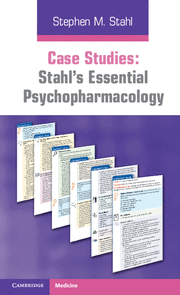
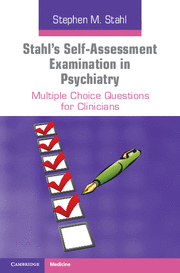
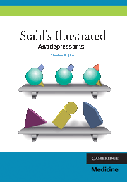
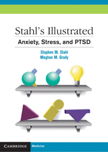
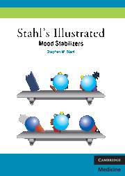
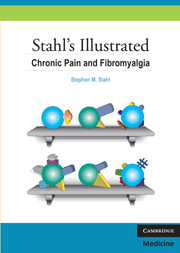
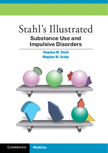

The World
According to Stahl
Essential. Trusted. Indispensable.

Watch the video above to hear Dr. Stahl in his own words.
“All of Dr. Stahl’s writing is characterized by clarity of presentation and a notable ability to transform complicated scientific principles into readily understood prose. Characteristically, he illustrates his instructions with informative, charming, and sometimes witty cartoon figures and diagrams. Dr. Stahl has a gift for teaching....”
Journal of Clinical Psychiatry
Stahl’s Essential Psychopharmacology
Fully revised, updated, and now with an even sleeker look and feel, larger page size, and a new two-column layout!
Click on the video below to hear Dr. Stahl talk about his new edition.
Reviews of the previous edition
“Remains the clearest book covering all the latest advances and developments in psychopharmacology. The method of teaching through illustration and conceptual form should continue to make it very popular.”
Doody’s Review Services
“Essential reading—I would thoroughly recommend this book to anyone who works with psychotropic drugs—or has the task of teaching others about them!”
The American Journal of Psychiatry
“Essential Psychopharmacology offers a wide range of readers an engaging and comprehensive view of psychopharmacology. It is highly recommended to both novice and experienced researchers, who stand to gain a new or renewed appreciation for the complexity and beauty of how the nervous system mediates the behavioral effects of drugs.”
Contemporary Psychology
“Those involved in teaching will find the text useful in preparation of lectures or seminars in psychopharmacology and the cartoons make excellent teaching aids. Clinicians will find the book to be a painless source of basic information that they need to be informed practitioners of psychopharmacology really is well titled. It will become an essential source for the information that informs the teaching and practice of psychiatric medicine over the next decade.”
The Lancet
The other must-haves!
Paperback | 9780521173643 | $79.00
"Case Studies has been designed with the distinctive, user-friendly presentation that has been so popular in Stahl’s Essential Psychopharmacology and The Prescriber’s Guide, and which capemizes on Dr Stahl’s renowned ability to address complex issues in an understandable way and with direct relevance to the everyday experience of clinicians.
Paperback | 9780521182089 | $69.00
"Dr Stahl’s books occupy a central position as core educational resources in the psychopharmacology literature. Building on Dr Stahl’s exceptional ability to communicate complex principles and make them easily understandable, this book offers 150 self-assessment questions derived from Dr. Stahl’s Online Master Psychopharmacology Program.
The self-assessment questions will help the reader to identify areas of competence or the need for further study. In addition, the questions themselves are learning exercises: each question is followed by a thorough explanation of the correct and incorrect answer choices. Readers can work through the questions to prepare for formal tests, including the American Board of Psychiatry and Neurology examinations and to achieve CME and MoC credits towards ongoing ABPN re-accredemtion. The questions are also ideal training tools for those working in related clinical fields and in industry.
Paperback | 9781107681590 | $49.99
Special offer!
Purchase your copy of Stahl’s Essential Psychopharmacology, Fourth Edition and get 30% off of The Prescriber’s Guide, Case Studies , and/or Stahl’s Self-Assessment Examination in Psychiatry!
Redeem your discount code at checkout!
STAHL’S ILLUSTRATED SERIES
The books in this series are designed to be fun. In full-color throughout, with illustrations in the style of his classic Essential Psychopharmacology and Prescriber’s Guide, they provide a speedy way to learn or review specific concepts in psychopharmacology.
The visual learner will find that these books make psychopharmacology concepts easy to master, while the non-visual learner will enjoy a shortened text version of complex psychopharmacology concepts.
Within each book, each chapter builds on previous chapters, synthesizing information from basic biology and diagnostics to building treatment plans and dealing with complications and comorbidities. And, to help guide the reader toward more in-depth learning about particular concepts, each book ends with a Suggested Reading section.
Paperback | 9780521149051 | $47.00
Paperback | 9780521758529 | $47.00

Paperback | 9780521133159 | $47.00
Paperback | 9780521153997 | $47.00
Paperback | 9780521758499 | $47.00
Paperback | 9780521133227 | $47.00
Paperback | 9781107674530 | $47.00
Stahl’s Essential Psychopharmacology Online
Stahl’s Essential Psychopharmacology Online is available on an annual subscription and pay-per-view basis for individuals, and with special licensing rates for institutional and corporate libraries.
For more details and current pricing, visit www.stahlonline.org and click on the Subscribe Today button. For institutional and corporate library pricing information and free trials, contact Cambridge Library and Institutional Sales at stahlonline@cambridge.org, or call 800-221-4512, ext 6535.
[INSERT IMAGES PROVIDED] in? Features the full text and all the illustrations from the latest editions of Stahl’s Essential Psychopharmacology, The Prescriber’s Guide, books currently available in the Stahl’s Illustrated Series, and other books authored and co-authored by Dr. Stahl, all searchable on the same platform. Updates and related content added several times each year.- Search drugs by class, name, type, or use across all content, tehn easily filter your results
- Use quick search for easy use during patient appointments
- Download illustrations and tables for presentations and lectures
- Cite, bookmark, or take notes at the click of a button
- Link directly to suggested readings
- Use one-click access to the Neuroscience Education Institute’s CME portal
CNS Spectrums
Reconfigured and relaunched in 2012, with a new editorial board, CNS Spectrums aims to be the premier journal covering all aspects of clinical neurosciences, neurotherapeutics and neuropsychopharmacology, particularly those pertinent to the clinician and clinical investigator.
Focused and in-depth, the journal, now bimonthly, contains illustrated and readable reviews, commentaries, and original research articles. New therapeutics of all types in psychiatry, mental health, and neurology are emphasized, especially in studies on humans and proof of concept studies. Subject coverage spans the full spectrum of neuropsychiatry, focusing on translational issues and those crossing traditional boundaries between neurology and psychiatry.

ISSN: 10928529_18-1
For more information, please visit journals.cambridge.org/cns.